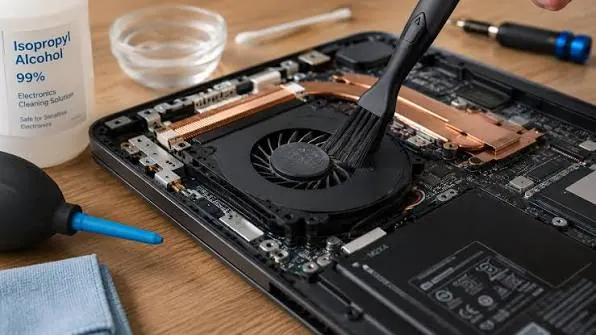

Laptops
Laptop Overheating? Causes, Fixes and When to Seek Repair
Learn why laptops overheat, how to improve cooling, which habits to avoid and when a technician should inspect the device.
Introduction: Understand Heat Before It Becomes a Problem
All laptops will produce heat from the components inside: CPU, GPU, battery, storage and power components. There are fans and heat pipes inside to help move this heat away. However, if your laptop is getting warm during a video call or demanding task, it doesn’t necessarily mean it is faulty. However, if it is getting unusually warm, it is slowing down, shutting down randomly or the fan is constantly running then there could be a problem with the cooling.
Overheating can cause your laptop to throttle its performance to keep itself safe. This is known as thermal throttling. If it can’t control the heat then it can cause it to shut down, become unstable or wear out quicker. It is best to see what kind of work load it is doing, what the airflow conditions are like and identify any hardware issues first.

Blocked Vents and Dust Build Up
Laptops rely on ventilation to keep cool, so dust, lint or pet hair can build up around the vents. A little dust can slow down the airflow, but if there is too much built up it can cause problems with the fan and heatsink.
Ensure your laptop is on a firm, flat surface with no blockage to the vents. Avoid using your laptop on a blanket, cushion or soft sofa when using it for demanding tasks as the fabric could block the ventilation. If the vents appear dusty then turn your laptop off and unplug your charger. Gently clean the outside with a dry, soft brush or compressed air. Avoid poking anything into the vents and avoid forcefully spinning up the fan with compressed air. If you need to clean the inside of the laptop a technician may be required especially if the laptop is still under warranty.
High Workload and Demanding Tasks
Using your laptop for video editing, 3D rendering, gaming, large spreadsheets, virtual machines or software development can put high strain on your laptop. Having many browser tabs open, cloud syncing, updates and background apps can also cause high strain. Your fan may be running at a higher speed due to the demanding task.
Open up the task manager (Windows) or Activity Monitor (macOS) to see what apps are using your CPU, GPU or memory. Close any apps that aren’t needed. Avoid closing any apps that you don’t recognise running on your system. If one particular app is using high resources constantly when idle then ensure it is up to date. See if there are any settings you can change in the app. If it is not needed then uninstall it. If you are unsure why it is using high resources then run a reputable malware scan. Remember that some updates can cause a temporary spike in activity.
Poor Ventilation and Hot Room
There isn’t a lot of space for your laptop to get good airflow. Using it on a soft surface, leaving it in direct sunlight or using it in a hot room can cause issues. Generally using it on a desk with ventilation will be the best option. Try to avoid having the back of your laptop flush up against a wall if the vents are on the back.
Having a laptop stand can help give better airflow. Some models may benefit from having a cooling pad, however this won’t help if your fan is blocked, heatsink has failed or thermal paste has dried out. Ensure any accessories you use don’t block the ventilation on your laptop.
Old Fan
The fan may start to become noisy, stop working properly or stop completely. You may notice odd noises such as grinding, rattling or clicking. You may also notice one side of your laptop is getting much warmer than usual. If the fan has been damaged it may not be able to provide enough airflow even though the software says it is running.
The heat pipes and heatsink can become ineffective if damaged, not fitted correctly or blocked. The thermal paste between the CPU and heatsink can become worse over time. However, not all laptops will require replacing this. If you notice any odd noises from your fan or overheating when idle get your hardware looked at. Don’t try to oil your fan or add paste without knowing how to take your laptop apart.
Power Settings and Updates
Some power profiles will put your laptop into a performance mode to allow more power to be used by your CPU. If your laptop is overheating when doing light tasks try using your manufacturers balanced or recommended settings. Ensure your OS, BIOS/Firmware and device drivers are up to date. This can help with power management and fan control. Never interrupt a firmware update.
Avoid using third party software that promises extreme cooling by changing unknown voltages or fan settings. This can cause instability or damage to your hardware. If you have a gaming laptop check the manufacturers control centre to see if they offer performance modes.
Battery Issues
If your battery is faulty or damaged it can pose a risk. Turn off your laptop and unplug it if you notice it swelling, trackpad or keyboard lifting, warped casing, strange smells, smoke or if it feels excessively hot around the battery. Don’t press, poke or squash your swollen battery. Keep it away from flammable items and get it seen by a qualified technician.
Battery swelling isn’t a normal part of your laptop getting warm. It needs to be handled with care and replaced or disposed of correctly. Don’t charge a visibly swollen laptop.

How To Cool Your Laptop
Save any work you are doing and close any demanding apps. Place your laptop on a firm, flat surface with plenty of space around the vents. Unplug any peripherals that aren’t needed. Let it cool down. Check your task usage and restart if something seems to be stuck. Gently clean any external vents you can reach whilst your laptop is turned off. If it keeps overheating during normal tasks get it looked at.
Don’t put your hot laptop in the fridge/freezer, splash any liquids on it or use a domestic vacuum on sensitive areas. This can cause condensation due to the sudden change in temperature. You may cause static or physical damage.
When To Get Repaired
If your laptop is shutting down due to overheating, getting extremely hot when idle, fan not turning, making grinding noises, fan errors or still overheating after checking the airflow and work load then get it looked at by a professional. They will be able to check your fan, heatsink, thermal paste, battery and motherboard. If it is under warranty check the manufacturers servicing policy first.
If possible back up any important files. When getting it repaired tell the technician when it started to overheat, if it only happens on battery or charger, what apps cause it and if the fan has changed. This can help identify if it is a cooling issue or software/power management issue.
Conclusion
Your laptop may be overheating due to blocked vents, high workloads, poor positioning, old fan, software settings or battery issues. Improving the airflow and ensuring your resources aren’t being used too much can help. However, if it is regularly shutting down, making strange noises from the fan or swelling battery then it should be looked at. Simple habits can help reduce unnecessary heat, however if you are experiencing regular issues then it is best to get a proper hardware diagnosis. The aim isn’t to make it completely cool, but to keep it running at the correct temperature..
Need a hand with your printer or laptop?
Printerworld sells printers, laptops and genuine supplies, and repairs and services both. Bring in your model number and we will help you get it right.